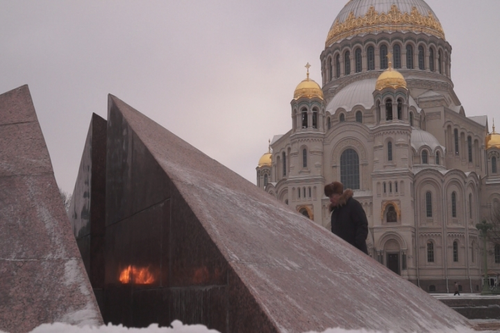
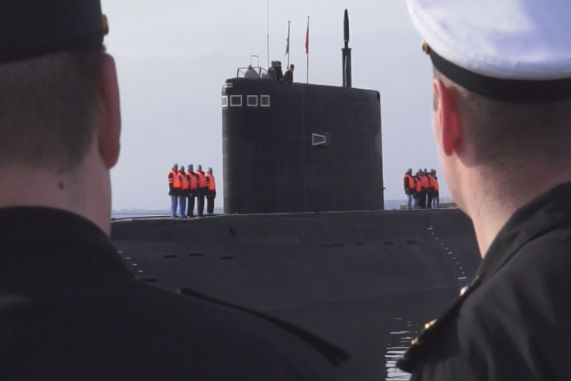
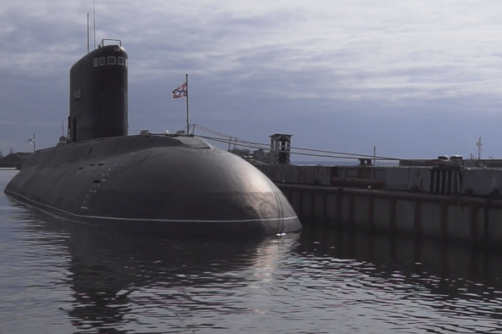
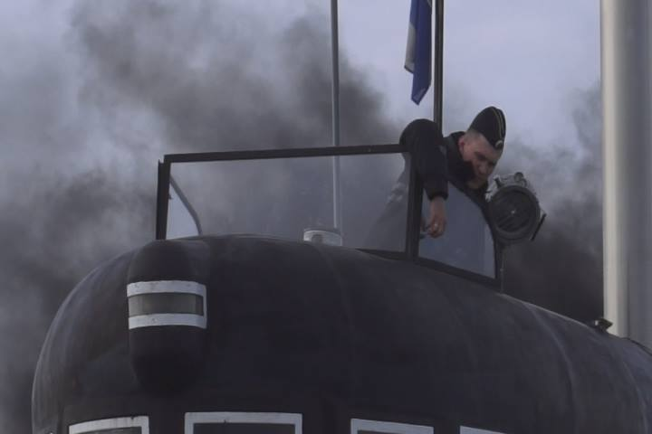
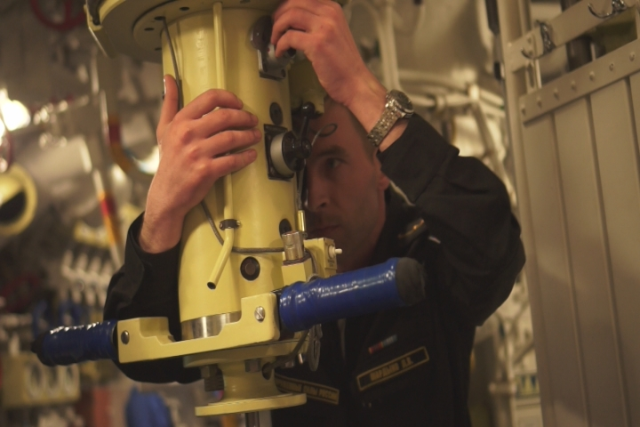
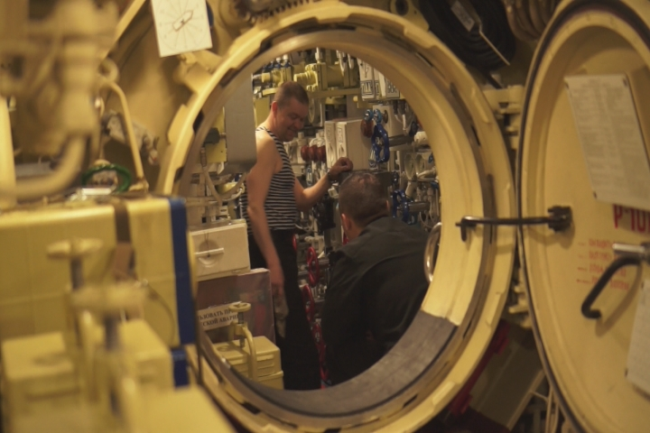
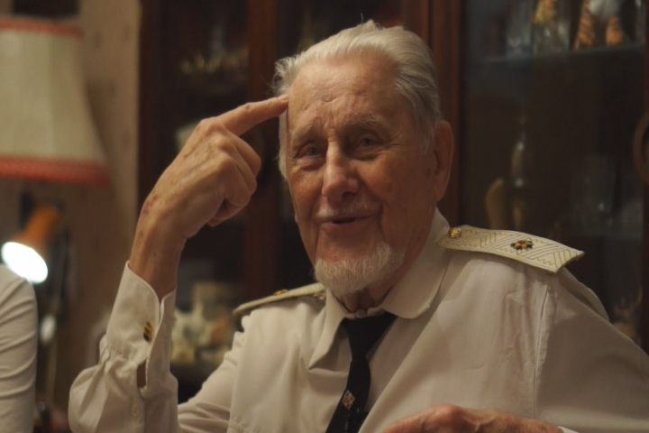
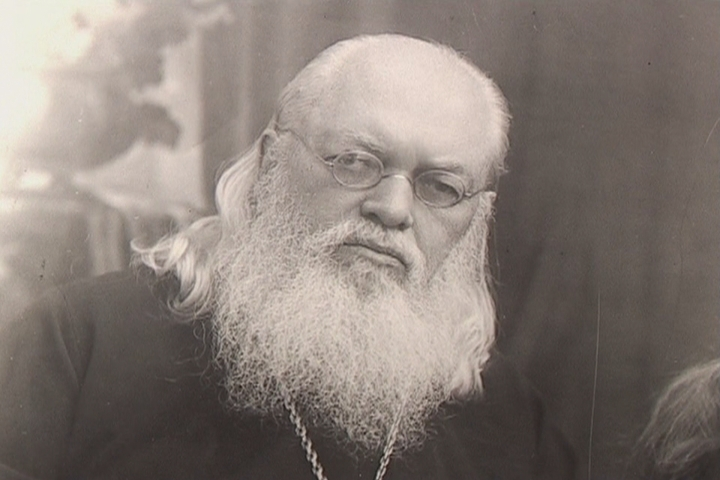

Документальный фильм
До последнего дыхания
При поддержке Министерства культуры Российской Федерации

"До последнего дыхания..." - Если семя, пав в землю, не умрет, то останется одно; а если умрет, то принесет много плода. Портрет легенды Военно-морского флота контр-адмирала Сенатского Юрия Константиновича на фоне его жизни и подвига. Ученик хирурга, профессора – Войно-Ясенецкого, архиепископа, канонизированного святого. Юрий Константинович спасает людей из морских глубин и не только… Наградами спасателей не жаловали, да и нужны ли им были награды, когда до последнего дыхания – один вздох? Преемственность поколений – дыхание жизни! Мы не успели оглянуться, а сыновья уходят в бой.
Автор сценария – Евгений Барханов
Режиссер - Евгений Барханов
Операторы – Евгений Барханов, Сергей Нестеров
Звукорежиссер - Виктор Брус
Продюсер – Лариса Моисеева
|  |
- Премьерный показ фильма и участие в конкурсной программе III Международного кинофестиваля им. Саввы Морозова, 2017г.
- VIII Международный фестиваль туристических и телепрограмм «Свидание с Россией». Диплом в Номинации «Фрески Севера», 2017г.
- XI Открытый Всероссийский фестиваль документальных фильмов "Соль Земли". Диплом в Номинации «Времена не выбирают», 2018г.
- Всероссийский кинофестиваль исторического и патриотического кино «Слава России». Приз молодежного жюри. Специальный приз за лучшую продюсерскую работу. Номинация «Полный метр», 2018г.
- Показ онлайн в Международном кинопроекте "Свидание с Россией 2020" 21 мая 2020г. Количество посмотревших зрителей – 41 361.
© АНО ТКО «МинАкультуры», 2017г., 67мин.